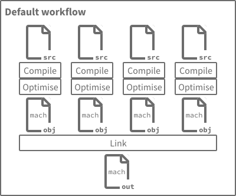
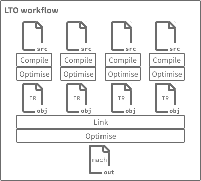
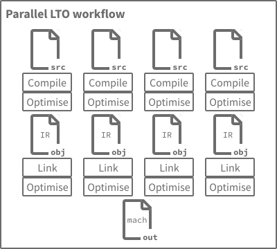

I recently started exploring link-time optimisation (LTO), which I used to think was just a single boolean choice in the compilation and linking workflow, and perhaps it was like that a while ago… I’ve learned that these days, there are many different dimensions of LTO across compilers and linkers today and more variations are being proposed all the time.
In this “living guide”, I aim to cover the LTO-related features I have encountered thus far. I intend to keep updating this going forward as I learn about new details in this space. I am sure there are even more corners to cover, so if you see something that should be added, corrected, etc. please contact me.
I am not aiming to provide specific recommendations here, as there are many tradeoffs to consider and different applications of LTO will weigh each of those differently. Instead, I hope this is a broadly useful portrayal of the facts.
This guide focuses on common toolchains for languages like C, Rust, etc. which typically use ahead-of-time (AOT) compilation and linking. Alternative toolchains for these languages and common toolchains for other languages may use other strategies like interpreting, JIT compilation, etc. Those other language implementation strategies do not offer LTO-like features (that I know of), so I have ignored them here.
I hope this guide is useful to experienced compiler users and compiler hackers who may not have heard about the latest work yet. I also hope it’s broadly accessible to those who may be unfamiliar with LTO.
Basics
Normal (non-LTO) compilation compiles and optimises one file at a time. LTO can optimise across all files at once. The overall aim of LTO is better runtime performance through whole-program analysis and cross-module optimisation.
Let’s take a high-level look at the workflow of most AOT compile and link toolchains. We’ll start off with the “default” workflow without LTO.

In the default workflow without LTO, each unit of source code is compiled and optimised separately to produce an object file with machine code for the target architecture. Optimisations can only consider a single source unit at a time, so all externally accessible symbols (functions and variables) must be preserved, even if they will end up being unused in the final linked output. The linker then combines these object files to produce the final output (executable or library).
Now let’s look at a workflow with LTO.

In the LTO setup, we still initially compile each source unit separately and perform some amount of optimisation, but the output is different: instead of machine code, the output of LTO compilation is an object file containing the compiler’s specific internal representation (IR) for that source unit.
The linking stage now performs a much more complex dance than it did before. The IR produced from compiling each source unit is read and the compiler’s optimisation pipeline is invoked to analyse and transform the whole program (the precise details of this varies with different LTO features, as we’ll see later in this guide). This whole program stage unlocks further optimisation opportunities, as we can remove symbols that are unused outside the whole program, inline functions from other source units, etc.
With those fundamentals out of the way, let’s look at various features and variants that toolchains offer to further tweak and customise this process.
Features and variants
Basic LTO
This is the simplest of the LTO modes and matches the workflow described above in Basics. Each compilation task produces object files containing the compiler’s internal IR format. The linking stage combines all compilation units into a single, large module. Interprocedural analysis and optimisation is performed on a single thread. With large code bases, this process is likely to consume lots of memory and take a considerable amount of time.
In terms of compile-time performance, the LLVM project has shown that compilation and linking of the Clang 3.9 codebase with basic LTO is ~5x the non-LTO time. This extra work achieves an average run-time performance improvement of 2.86%.
This mode is also referred to as “full LTO”.
| Toolchain | First available | Option |
|---|---|---|
| Clang | 2.6 (2009) | -flto or -flto=full |
| GCC | 4.5 (2010) | -flto -flto-partition=one |
| Rust | 1.0 (2015) | -C lto |
Parallel LTO
Toolchains have come up with a variety of related techniques to speed up the the link-time work of LTO while preserving (most of) the run-time performance gains. Instead of creating a single, massive module at link time, a much smaller global index of functions likely to be inlined is computed. With that in hand, each compilation unit can be processed in parallel at link time while still benefiting from most of the same whole-program optimisations as basic LTO.

Continuing with the same example data based on building Clang 3.9, LLVM’s implementation of parallel LTO achieves nearly all of the run-time performance improvement as seen with basic LTO: basic LTO reached a 2.86% improvement over non-LTO, while parallel LTO achieved a 2.63% improvement over non-LTO.
The compilation time improves dramatically: instead of 5x non-LTO, it’s now only 1.2x non-LTO, which is quite impressive.
The technical details of how each toolchain implements parallel LTO vary somewhat. LLVM-based toolchains (which includes Clang and Rust from our discussions here) optimise different compilation units in parallel and inlines across module boundaries, but most other cross-modules optimisations are skipped. GCC, on the other hand, partitions (nearly) the same optimisation work it would have done with one thread into a batch per thread.
This suggests that GCC’s parallel LTO should be able to get closer than LLVM in achieving the same run-time performance as with basic LTO (our recurring dataset shows a 0.23% run-time delta between LLVM’s basic and parallel modes). At the same time, LLVM’s approach may be better able to handle incremental changes in a single module of large program. If you would like to see data comparing the two modes in GCC, please let me know.
This mode is also referred to as “thin LTO”, particularly in the LLVM ecosystem. The “thin” concept on the LLVM side refers to the fact that no IR is involved in the whole program analysis step.
| Toolchain | First available | Option |
|---|---|---|
| Clang | 3.9 (2016) | -flto=thin |
| GCC | 4.6 (2011) | -flto=auto or -flto=<threads> |
| Rust | 1.25 (2018) | -C lto=thin |
LTO with mode selection deferred to link time
In some applications, it may be useful to support both the basic and parallel LTO modes. In this arrangement, the compiler IR attached to each object file stores all the info it needs to run either LTO mode at link time.
When it’s time to link, you can then choose either of the basic or parallel LTO modes via link-time compiler options (for the toolchains mentioned here, the program commonly referred to as just the “compiler” is really the “compiler driver” which in turn calls the other programs in the workflow, such as the linker).
This variant is also referred to as “unified LTO”.
| Toolchain | First available | Option |
|---|---|---|
| Clang | 17 (2023) | -funified-lto |
| GCC | 4.5 (2010) | supported by default |
| Rust | — | — |
LTO enablement decision deferred to link time
It may also be useful to push the choice of whether to use LTO at all down to the linking step of the workflow. To support this use case, the compiler combines both machine code and internal IR in the object files produced by each compilation unit.
This variant is also referred to as “fat LTO objects”.
| Toolchain | First available | Option |
|---|---|---|
| Clang | 17 (2023) | -ffat-lto-objects |
| GCC | 4.9 (2014) | -ffat-lto-objects |
| Rust | — | — |
Other details
There are a few other more advanced corners of LTO, including:
- Distributed build support
- Symbol visibility
- Linker caching
If you’re curious about any of these or other aspects, please let me know! I plan to extend this guide to document additional bits of LTO that others are interested in.
Acknowledgements
Thanks to Teresa Johnson, Jan Hubička, Iti Shree, and Laurence Tratt for feedback on earlier drafts.